2026-10-04 / Codex単独。 提供アーカイブの再現、保存RGB-Dの位置合わせ、現在のライブ観測を分けて記録します。
後続の20姿勢検証・最終レビューで、 腕不在時に背景へ根元を移す誤追跡を発見し修正しました。このページの性能はその修正前の記録です。 最新の制約・手首の停止・不在判定は後続レポートを参照してください。
修正後の60秒計測で成功1012姿勢（16.87Hz）、処理時点の画像age p95 0.114秒を確認しました。別のHTTP観測99回は全てtracking、age p95 0.157秒。 条件はcamera/base固定、開いた姿勢の画像由来初期値、nominal R5_65。 完全に畳まれた画像からの初回探索と絶対角精度は未保証です。
| 項目 | 確認結果 |
|---|---|
| 入力 | robot_fit_20261004.zip、550ファイル。原本と取り込みSHA256は manifest。元の注釈と32試行を保存。 |
| 数値核 | nanobindを実ビルド、元14試験成功。Gaussian E段階・共有FKとtwist M段階を再利用。 |
| 元静止画 | 選択最良初期値の再計算。state最大差1.64e-14、score差1.11e-16。 全32試行を新規再実行した結果ではありません。 |
| 実装検証 | root344試験成功後、表示の鮮度とカウント用に追加1試験成功。 後続変更は関節回復・表示の影響2試験のみ再確認。ruff/ty成功、複雑度最大10。 |
| 現物モデル | 裸R3 + 長尺D405 R5 nominal65°。現物65/75°は未確定。 爪なし・USBケーブル未モデル化。J5は不可観測(null)。 |
| RGB-D | 外部D435 922612070196、1280×720/30。colorへdepthをalign、 SDKのK・m/count・同一frame RGB-Dを保存。手先D405とは別。 |
手動訓練点を使った原実装の再現です。ライブ自動認識とは区別します。
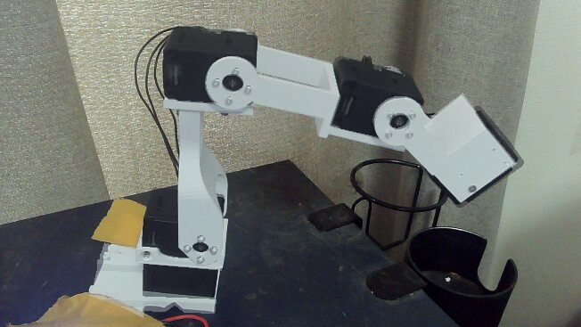
ユーザー指示D15により実施。新しいREADの安定した折り畳み基準は [2113,3474,1153,3392,1951] count。既存CameraPhotoController、PV6/PA1/PWM350、 元のRAM制限と健康・保持guardを再利用。ID1/2/4/5を保持しました。
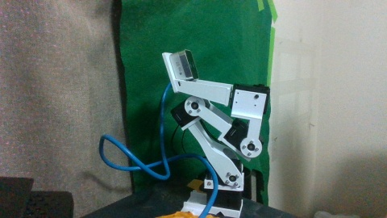
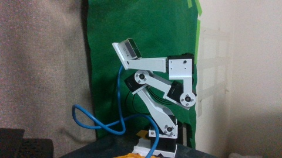
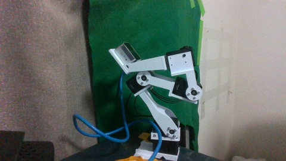
関節の間隔が広がり、画像上ではケーブルのループに余裕があり台座移動も見えません。 これは目視確認で、全可動域の干渉認証ではありません。実機経過は イベントとREADの記録を参照。 21:06:30に基準へ復帰・全5台トルクOFF・RAM設定復元が完了。 約1分後の3回READでもID3 1157 count、他軸も安定しエラー0を確認しました。
一時的な9Hz表示と、再取得の時間を含めた持続性能は違います。 下記は改修前runの計測。現在は再認識中のpose Hzをnullとし、mask ageも現在時刻から 数えます。古いmask/poseを現在値として表示しません。
{
"source": "diary/2026-10-04/articulated-fit/live-quality-mask/poses.jsonl",
"window_requested_seconds": 60,
"window_observed_seconds": 56.01651754400518,
"records": 68,
"status_counts": {
"tracking": 45,
"lost": 20,
"reacquiring": 3
},
"distinct_successful_poses": 45,
"successful_pose_hz": 0.8033344801316704,
"successful_publication_age_p95_seconds": 0.21022542259597676,
"note": "Includes lost/reacquisition gaps; publication age excludes subsequent browser delay. A short observation window is not proof of sustained performance."
}
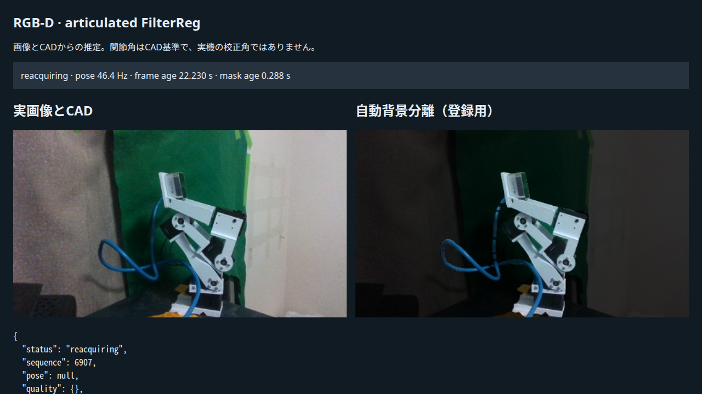
{
"source": "diary/2026-10-04/articulated-fit/live-final/poses.jsonl",
"window_requested_seconds": 60.0,
"window_observed_seconds": 59.99566991000029,
"records": 1012,
"status_counts": {
"tracking": 1012
},
"distinct_successful_poses": 1012,
"successful_pose_hz": 16.86788399092976,
"successful_publication_age_p95_seconds": 0.11438544470511261,
"note": "Includes lost/reacquisition gaps; publication age excludes subsequent browser delay. A short observation window is not proof of sustained performance."
}
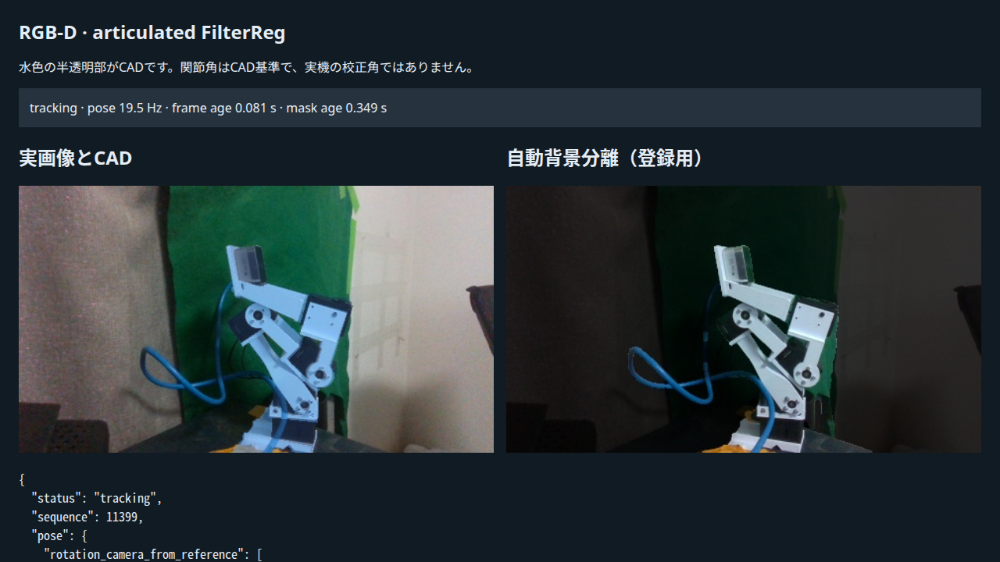
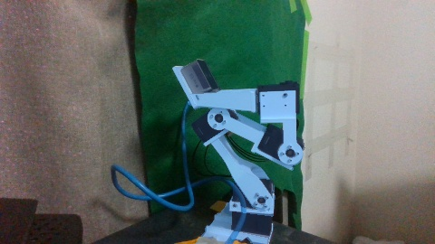
HTTPの99観測とage · 修正後の実機動作・復帰記録。 空mask・欠損depth3回→復元の再取得は独立した合成関節回復試験で確認。 実SDKの切断試験とは区別します。絶対角精度や全可動域の干渉認証ではありません。
全21画像がtracking、IoU0.702–0.868、深度点距離中央値2.65–4.53mm。 静止画間のジャンプごとに8回整定しており、動画fps・実角度の真値検証ではありません。 画像をクリックすると元サイズを開きます。 全結果と入力path
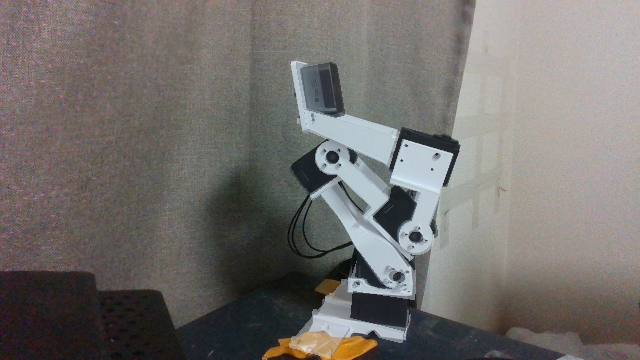
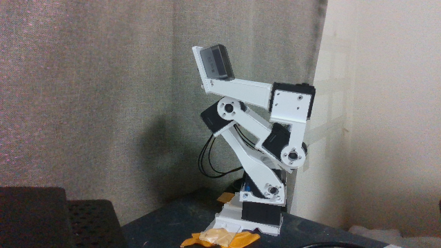
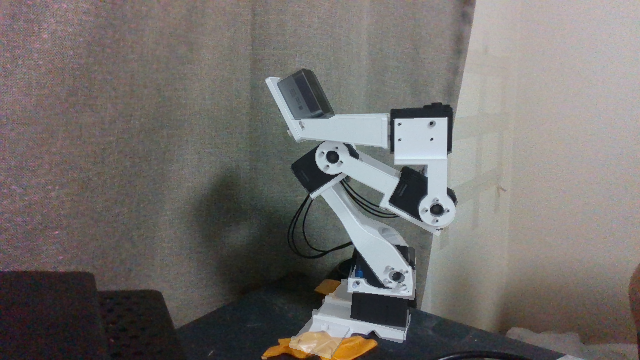
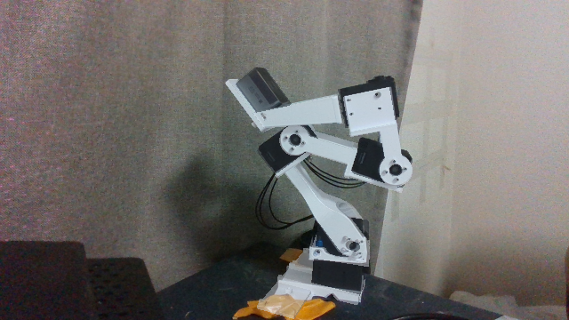
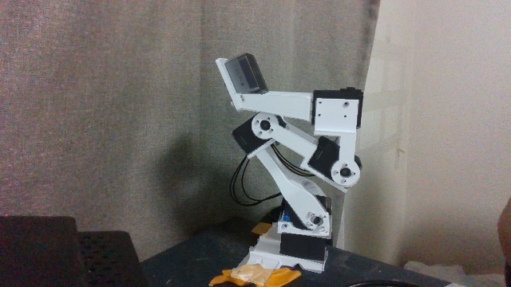
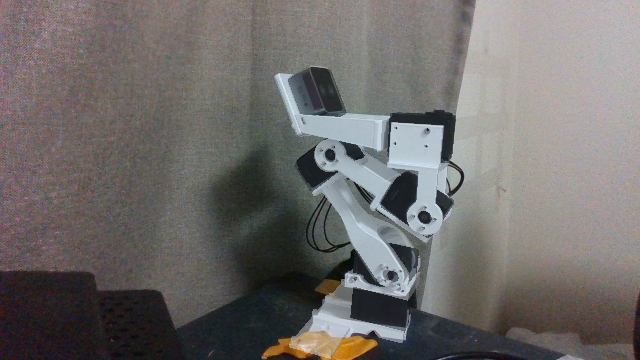
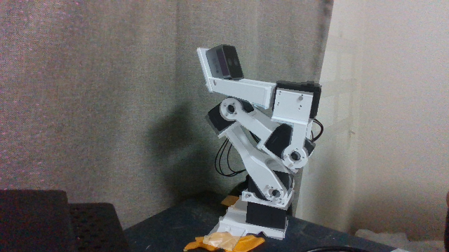
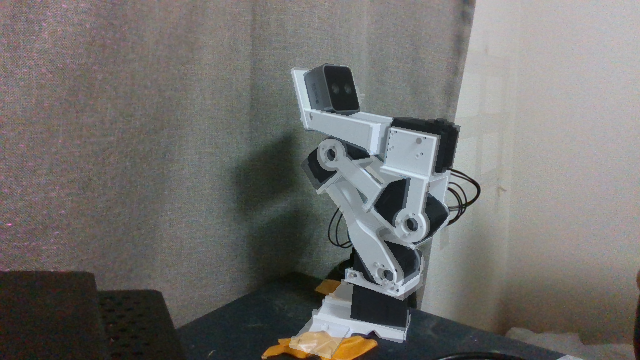
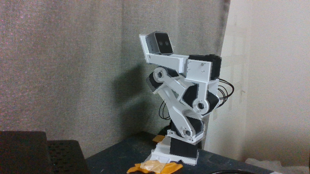
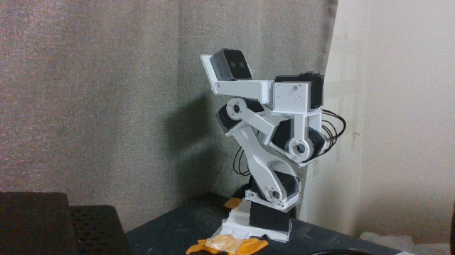
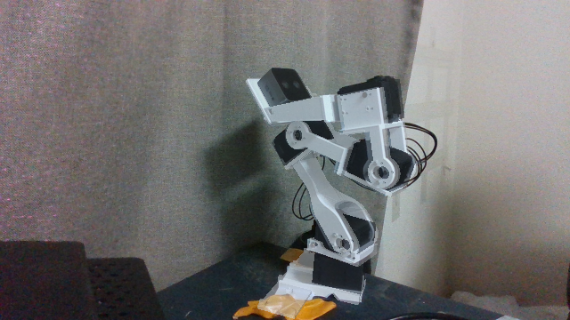
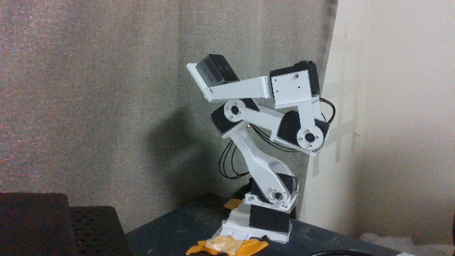
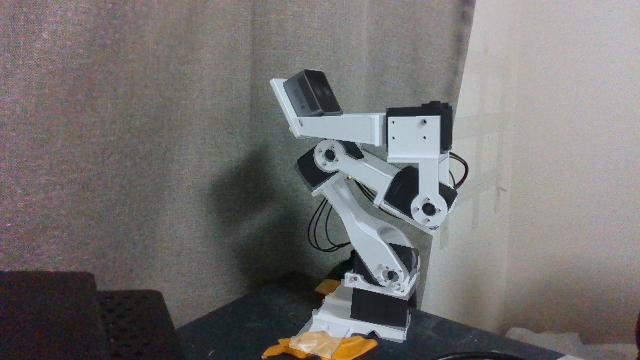
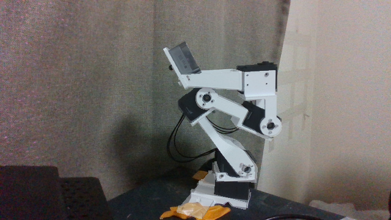
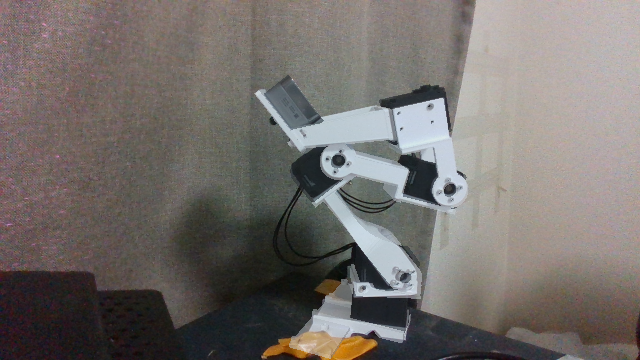
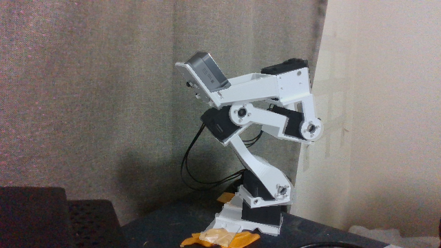
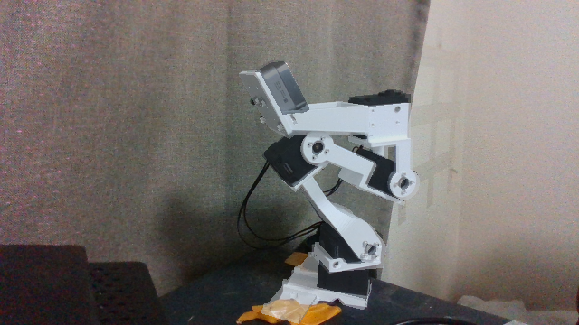
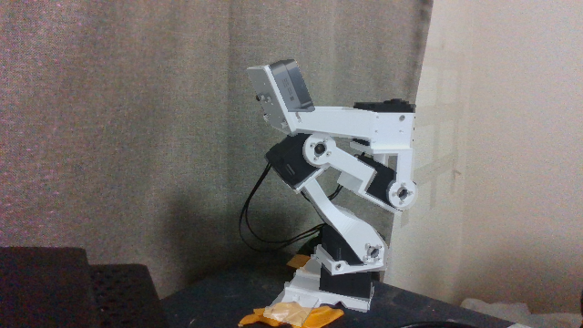
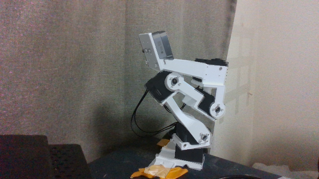
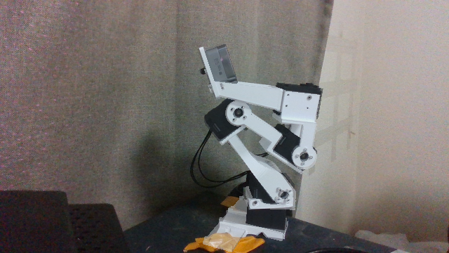
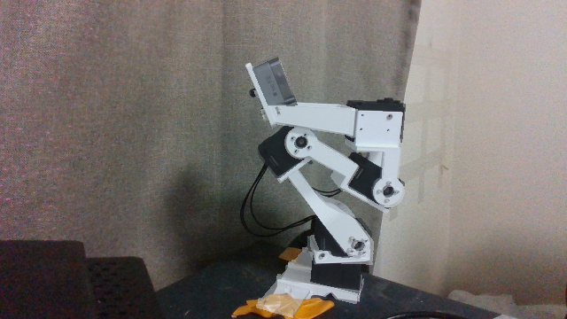
同じRGB画像で512/768/1024を比較。512では腕が消えて青いケーブルだけ残る例があり、 768では腕の全体が残りました。単独GPU計測で768は約80–84ms。 これはライブ持続速度ではありません。 同一画像の比較結果
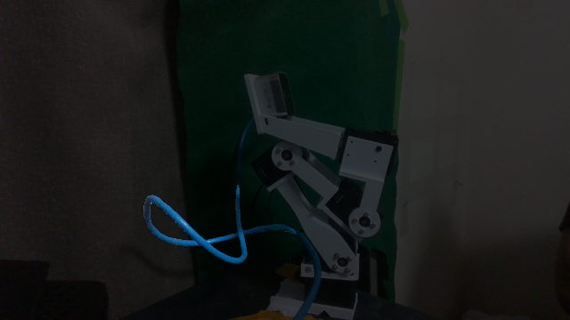
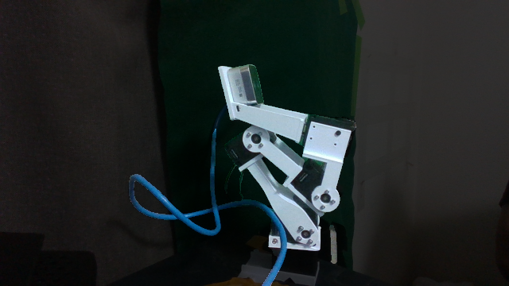